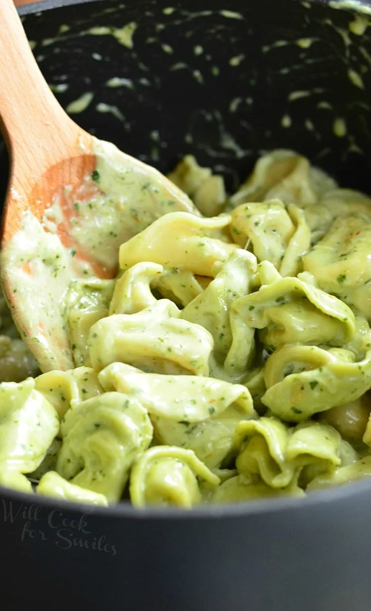

Pesto Alfredo!

Description
Pesto Alfredo is a creamy, cheesy herb sauce that everyone loves! Its base uses
pesto, butter, garlic, parmesean cheese, and many other delicious ingredients.
Pesto itself is made of pine nuts, garlic, kosher salt, basil leaves, olive oil,
and many other ancillary ingredients. Hope you enjoy this recipe!
Ingredients
- 8 ounce pasta
- 4 tablespoon butter
- 2 cloves garlic
- 1 1/2 cups mlik
- 1 cup heavy cream
- 1/2 cup Parmesean cheese
- 1/4 teaspoon salt
- 1/4 teaspoon pepper
- 2 tablespoon fresh parsley
Steps
- Cook the pasta according to package instructions
- Melt the butter in a large skillet over medium high heat.
Add the garlic and cook for 30 seconds, or until fragrant.
- Pour in the milk and cream. Stir consistently to avoid burning on the
bottom of the pan until the mixture comes to a boil.
Turn the heat down to medium, and mix in the parmesan cheese, salt, and pepper.
Adjust the seasoning to your own taste.
- Remove the pan from the heat and mix in the
cooked pasta until the sauce begins to thicken.
Garnish with parsley, and serve.
Back to Home Page